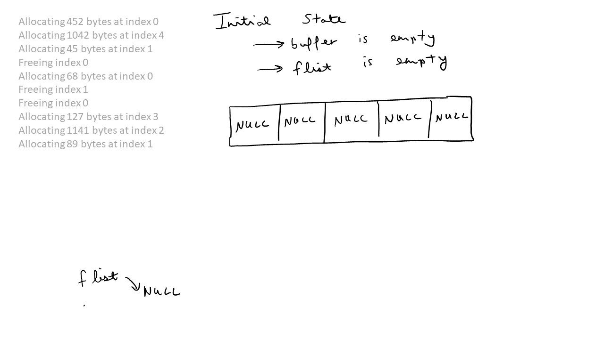
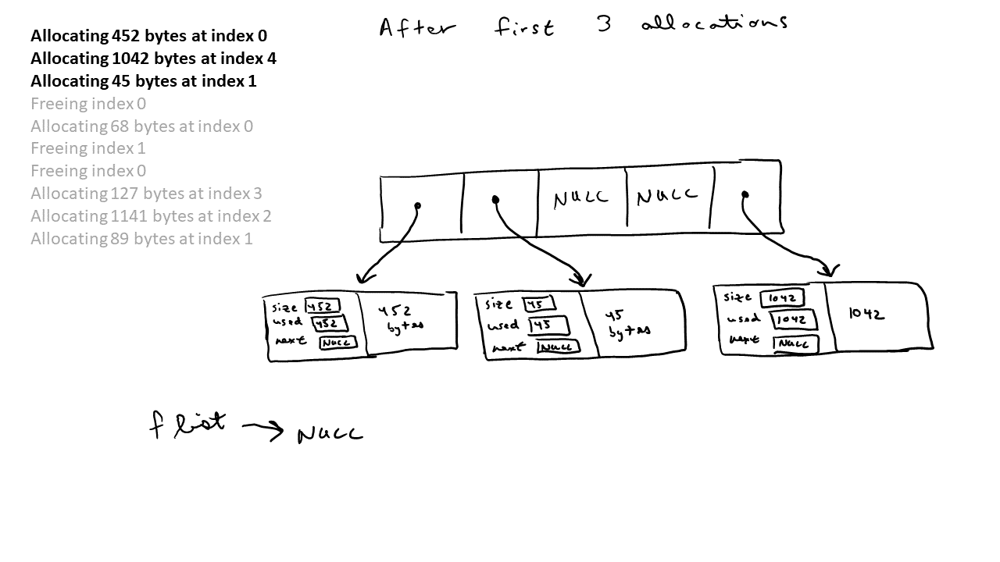
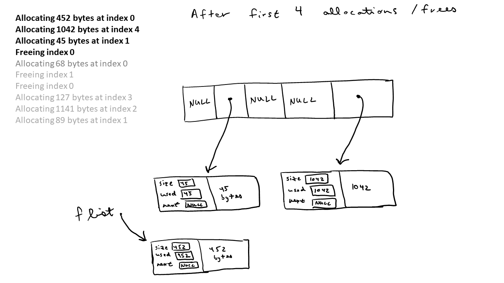
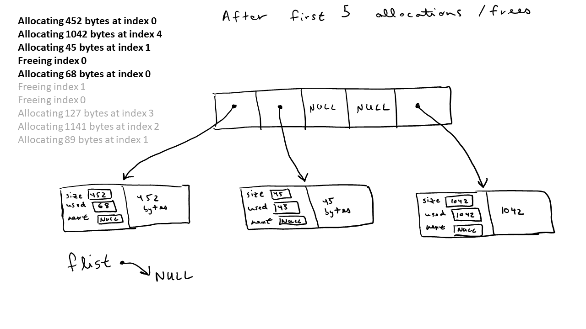
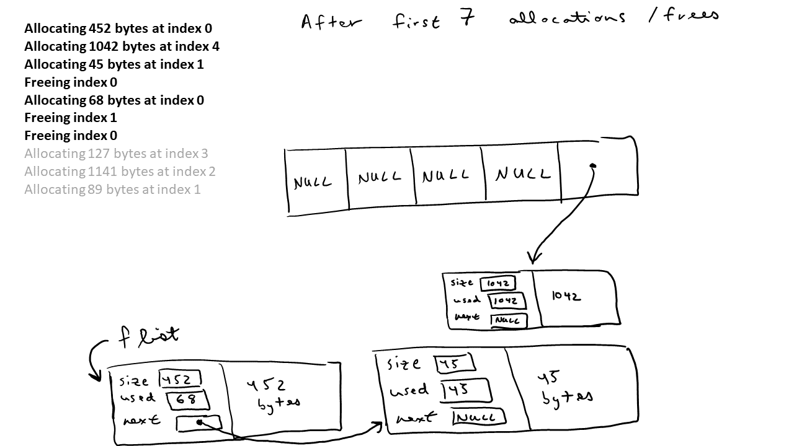
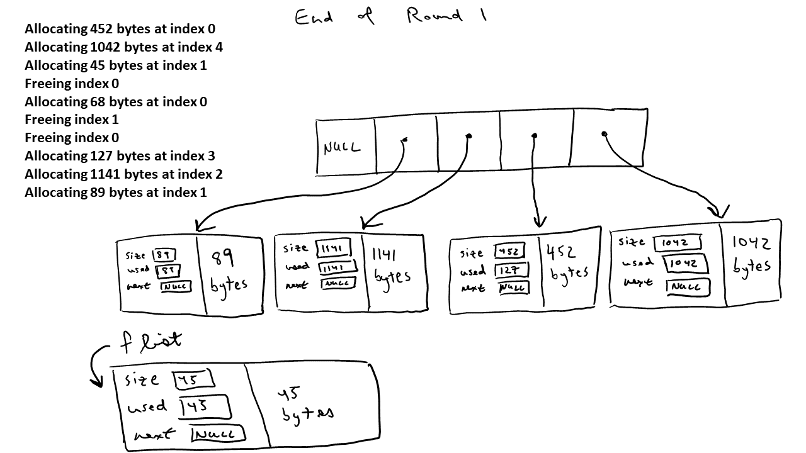

Lab: Visualizing memory allocations
Names:
Consider the output from the following program. This program makes a series of malloc/free calls based on random sizes of memory. In this question, you will visualize the execution of malloc and free based on the example from class.
$ ./memstats
Starting test..
The initial top of the heap is 0x7feffe84d010.
---------------
0
Allocating 452 bytes at index 0
Allocating 1042 bytes at index 4
Allocating 45 bytes at index 1
Freeing index 0
Allocating 68 bytes at index 0
Freeing index 1
Freeing index 0
Allocating 127 bytes at index 3
Allocating 1141 bytes at index 2
Allocating 89 bytes at index 1
The new top of the heap is 0x7feffe84db31.
Increased by 2849 (0xb21) bytes
Total blocks: 5 Free blocks: 1 Used blocks: 4
Total memory allocated: 2769 Free memory: 45 Used memory: 2724
Underutilized memory: 0.12
---------------
1
Freeing index 3
Allocating 47 bytes at index 0
Freeing index 4
Freeing index 1
Freeing index 2
Freeing index 0
Allocating 3426 bytes at index 1
Freeing index 1
Allocating 39 bytes at index 2
Allocating 163 bytes at index 4
The new top of the heap is 0x7feffe84e8a3.
Increased by 3442 (0xd72) bytes
Total blocks: 6 Free blocks: 4 Used blocks: 2
Total memory allocated: 6195 Free memory: 2317 Used memory: 3878
Underutilized memory: 0.95
---------------
2
Allocating 1658 bytes at index 3
Allocating 1812 bytes at index 0
Freeing index 3
Allocating 39 bytes at index 3
Allocating 156 bytes at index 1
Freeing index 3
Freeing index 1
Freeing index 4
Freeing index 2
Allocating 921 bytes at index 1
The new top of the heap is 0x7feffe84f651.
Increased by 3502 (0xdae) bytes
Total blocks: 8 Free blocks: 6 Used blocks: 2
Total memory allocated: 9665 Free memory: 4427 Used memory: 5238
Underutilized memory: 0.48
Time is 4.1e-05Below, we explain the first block of memory allocations (Round 1). When the program starts, we have no buffers allocated and the free list is empty.

After the first 3 allocations, the buffers and free list look as follows:

After the next iteration, we have

After the next iteration, we have

After the next iteration, we have

At the end of round 1, the buffers and free list look as follows

Answer the following questions:
1) Why is the total memory allocated equal to 2769 bytes?
2) If the total memory is equal to 2769 bytes, why did the heap increase by 2849 bytes?
3) Draw the buffers and free list after round 1
4) Draw the buffers and free list after round 2